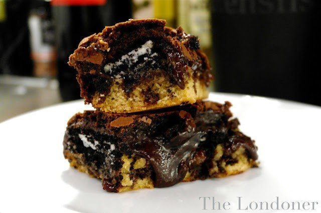

Slutty Bronwies

Description
Now I don't want to over sell this, so I'm going to be conservative and simply say, that these are… The Best Brownies In The WORLD. They're called Slutty Brownies because they're oh so easy, and more than a little bit filthy. They’re best served warm from the oven, with good quality vanilla ice cream (devastatingly I didn’t have any in the freezer this time, so I guess I’ll just have to make them again). They take about 45mins to make, including baking time.
Ingredients
- 1 Box of cookie mix
- 1 Box of brownie mix
- 2 Eggs
- 2 Packs of Oreos (double stuffed ones are even better if you can find them)
- Some oil
- Your favourite ice-cream (optional)
Steps
- Preheat your oven to 350F, 180C, gas mark 4
- Line a baking tray with grease proof paper
- Follow the instructions on the cookie mix box & stir furiously until you have gooey cookie dough, I usually add a little extra water and oil to what they suggest, it just keeps it moist as you’ll be baking it for longer than suggested. An extra teaspoon of each is just right
- Squidge (technical term) the cookie dough into a lined baking tray, until it covers the bottom.
- Cover this layer with your Oreos. Don’t use the broken ones, eat them as you go. This recipe is too glorious to use substandard Oreos.
- Mix up your brownie batter. Just stick to the recipe on the box for this one.
- Pour over your Oreos
- Bake for 30mins
- Remove from the oven and leave to cool
- When its still a little bit warm, use the paper to lift your creation out of the tray and rest it on a chopping board
- Use a large, sharp knife to cut it into manageable chunks, sections, slabs… depending on how many calories you think you can handle in one sitting.
- Drop onto a plate and scoop on your ice cream.
- Enjoy, and don’t forget to lick the bowl!